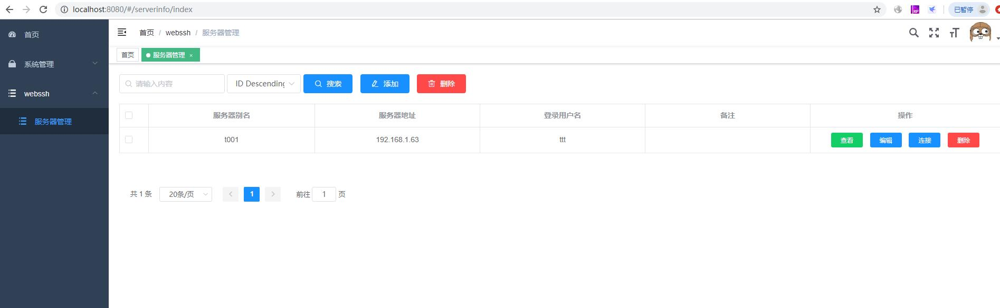

简析
基于goapp+xterm实现webssh-网页上的SSH终端，linux管理工具。
开源地址见文末。
特性
在网页上实现一个SSH终端。从而无需Xshell之类的模拟终端工具进行SSH连接。
可以对交互命令进行审计、记录
在页面上按一个键，就能打开一个webssh，并且自动登录 ，方便地管理各个服务器
可以集成到自有的后台管理体系中
下载并运行
下载可执行文件体验
链接: https://pan.baidu.com/s/1cgMF0rXf5hlx0DF3N7nVUw 提取码: have
下载后直接运行gowebssh.exe，然后添加你的服务器信息即可。
获取代码
go get -v github.com/it234/gowebssh
运行
运行服务端：cd cmd/manageweb，go run main.go，运行成功后打开 127.0.0.1:8080。
调试/运行web：cd website/manageweb，npm install，npm run dev。
配置文件在(cmd/manageweb/config.yaml)中，用户默认为：admin/123456。
温馨提醒
默认配置采用的是 sqlite 数据库，数据库文件(自动生成)在cmd/manageweb/data/goapp.db。如果想切换为mysql或postgres，请更改配置文件，并创建数据库（表会自动创建）。 日志的配置为标准输出并写入文件。
项目结构概览
├── cmd 项目的主要应用
├── internal 私有应用程序和库代码
├── pkg 外部应用程序可以使用的库代码
├── vendor 项目依赖的其他第三方库
界面
